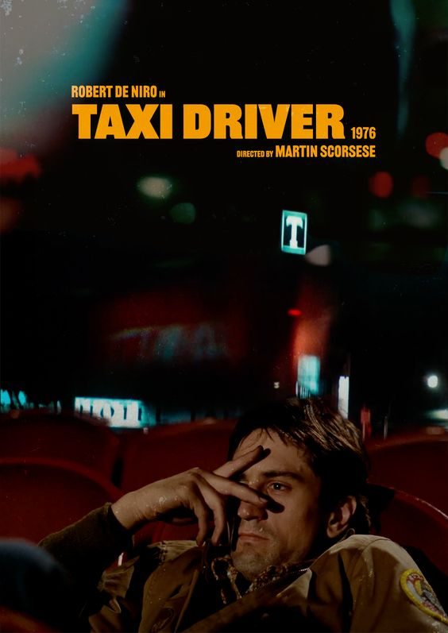

Taxi Driver

ტაქსის მძღოლი არის 1976 წლის ამერიკული ნეო-ნუარის ფსიქოლოგიური თრილერი, რეჟისორ მარტინ სკორსეზეს მიერ,
სცენარის ავტორია პოლ შრეიდერი.
ფილმში მონაწილეობენ რობერტ დე ნირო, ჯოდი ფოსტერი, კიბილ შეფერდი, ჰარვი კეიტელი, პიტერ ბოილი, ლეონარდ ჰარისი და
ალბერტ ბრუკსი.
მოქმედება ვითარდება ვიეტნამის ომის შემდეგ დაშლილ და მორალურად გაკოტრებულ ნიუ-იორკში,
ფილმი მოგვითხრობს ტრევის ბიკლის (დე ნირო), ვეტერანისა და ტაქსის მძღოლის შესახებ,
და მიჰყვება მის გაუარესებულ ფსიქიკურ მდგომარეობას, როდესაც ის ღამით ქალაქში მუშაობს.
ნიუ-იორკში ტრევის ბიკლი მუშაობს ღამის ცვლაში ტაქსის მძღოლად, რათა გაუმკლავდეს თავის ქრონიკულ უძილობას და მარტოობას.
ის ხშირად დადის 42-ე ქუჩის პორნოთეატრებში და ინახავს დღიურს, რომელშიც შეგნებულად ცდილობს ჩართოს აფორიზმები,
როგორიცაა "შენ ისეთივე ჯანმრთელი ხარ, როგორც გრძნობ".
მას ეზიზღება დანაშაული და ურბანული ნგრევა, რომლის მოწმეც ხდება ქალაქში და ოცნებობს „ქუჩებიდან ნაძირლების“ განდევნაზე.